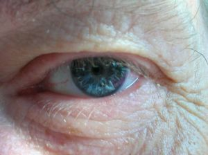

| 4.3 Aseo parcial |
 |
Este apartado hace referencia al aseo de zonas
concretas del cuerpo, que puede hacerse a la vez que el general y diario,
o en las circunstancias que se precise.
4.3.1 Limpieza de ojos
- Recursos materiales
- Gasas estériles.
- Jeringas de 10 c.c. estériles.
- Guantes de un solo uso (no estériles).
- Suero fisiológico y Batea.
|
|
 |
| |
- Protocolo de actuación
- Lavarnos las manos con agua y jabón, colocarnos los guantes.
- Preparar el material y llevarlo a la habitación del usuario.
- Informar al mismo, así como preservar su intimidad.
- Colocamos al usuario en decúbito supino o en posición
de Fowler (la que esté más indicada, según
las características del enfermo).
- Cargamos las jeringas con suero fisiológico (una para
cada ojo).
- Con una mano abrimos los párpados del usuario.
- Con la otra mano realizaremos la limpieza del ojo: instilando
el suero fisiológico desde el lagrimal hacia fuera.
- Secamos con la gasa estéril cada ojo (utilizar también
una gasa diferente para cada ojo).
- Cerramos los párpados del usuario suavemente.
- Volvemos a colocar al usuario en una postura cómoda y
adecuada a su estado.
- Recogemos el material utilizado, nos quitamos los guantes y procedemos
de nuevo al lavado de manos.
|
|
|